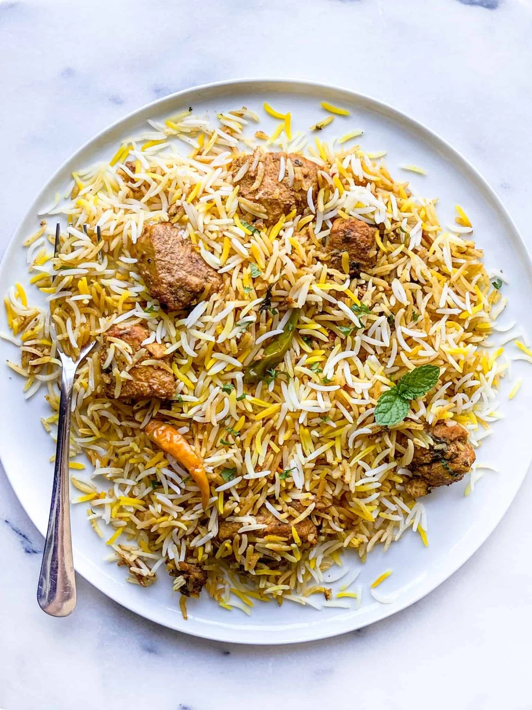

Home
Chicken Biryani

Description:
Biryani is a celebrated South Asian mixed rice dish made with fragrant long-grain rice (like basmati), layered with marinated meat, fish, or vegetables, and slow-cooked with aromatic spices. Evolving from Persian and Mughal traditions, it is renowned for its rich flavors and tender textures.The defining characteristic of a traditional biryani is the dum cooking process. The parboiled rice and the meat/gravy are layered in a heavy-bottomed pot, sealed tight with dough or a heavy lid, and slow-cooked over a low flame. This allows the steam to blend the flavors and infuse the rice with the rich aroma of the spices and meats.
Ingridients:
- 500 g chicken, 2 cups basmati rice, 3 onions (thinly sliced), 2 tomatoes (chopped), ½ cup curd (yogurt)
- 1 tbsp ginger-garlic paste, 2 to 3 green chilies, ½ tsp turmeric powder
- ½ tsp garam masala, 1 tsp biryani masala, 2 bay leaves, 4 cloves, 2 green cardamoms, 1-inch cinnamon stick
- a handful of mint leaves, a handful of coriander leaves, 3 tbsp oil or ghee
- 1 tsp red chili powder, 1 tsp coriander powder,salt to taste, and water as required
Steps:
- Wash and soak the basmati rice for 30 minutes. Marinate the chicken with curd, ginger-garlic paste, turmeric, red chili powder, coriander powder, garam masala, biryani masala, and salt for at least 30 minutes.
- Heat oil or ghee in a large pot and fry the sliced onions until golden brown; reserve some for garnishing. Add bay leaves, cloves, cardamom, and cinnamon, then sauté for a few seconds.
-
Add green chilies and tomatoes and cook until the tomatoes soften. Add the marinated chicken and cook until it changes color and is about 70 to 80% cooked.
-
Stir in mint and coriander leaves. In a separate pot, boil water with salt and cook the soaked rice until it is about 70% done, then drain.
-
Layer the partially cooked rice over the chicken mixture, top with the reserved fried onions, some mint and coriander, and optionally a little ghee.
-
over tightly and cook on low heat (dum) for 20 to 25 minutes until the rice is fully cooked and the flavors combine. Let it rest for 10 minutes before gently mixing and serving hot